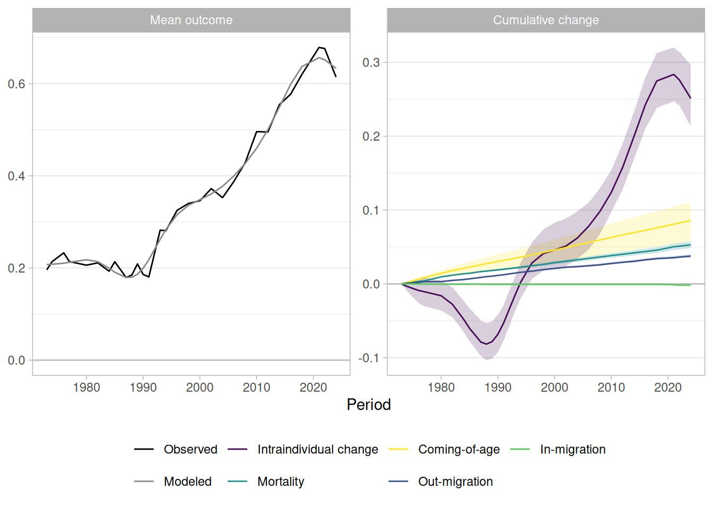
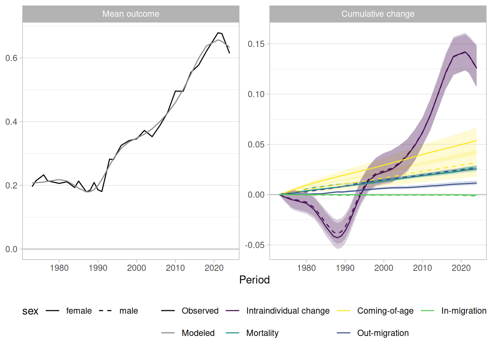
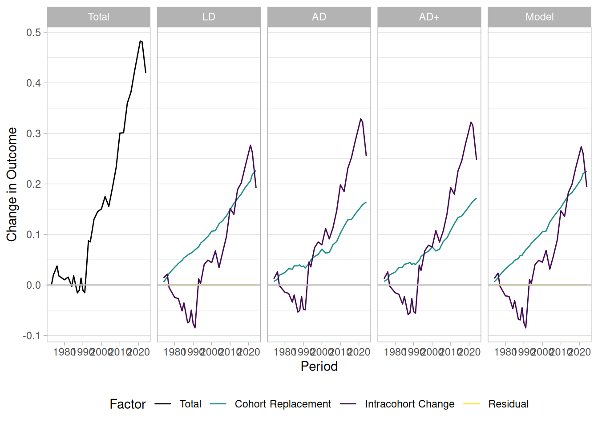

library("socialchange")
library("modelsummary")
library("ggplot2")
library("mgcv")
data(gss_homosex)Decomposing General Social Survey data: Attitudes toward homosexuality
Source:vignettes/gss_homosexuality.qmd
The package includes gss_homosex, which covers General Social Survey (GSS) data on attitudes toward homosexuality in the United States from 1973 through 2024. Ekstam (2021) analyzes the same GSS item through 2016. This vignette uses decompose_aggregated() to ask how much of the increase in acceptance reflects modeled change within the surviving population and how much reflects population turnover.
Key findings
- Acceptance increased by about 42 percentage points. The model attributes about 59% of this rise to modeled change within the surviving adult population (intraindividual change). The other 41% came from changes in who made up the population (population turnover): more accepting younger people entered adulthood, less accepting older people died, and the population changed through migration.
- From 1973 through 1988, people already in the adult population became less accepting. Their opinion change pushed acceptance down, while the entry of younger people and the death of older people limited the decline. From 1988 through 2018, people already in the adult population became more accepting. This broad opinion change became the main source of rising acceptance, while generational replacement continued to add to it.
- From 2021 through 2024, intraindividual change was negative while turnover remained positive. Survey-mode changes prevent a clear sociological interpretation of this short reversal.
- The broad split is stable across the demographic inputs used below. The allocation within turnover is not stable: population estimates and mortality probabilities improve the attribution of mortality and residual migration.
Packages
Observed change
The homosex outcome is rescaled to [0, 1], where 0 means “always wrong” and 1 means “not wrong at all.” The question was not asked in 1972, 1975, 1978, 1983, or 1986, so those years are absent. In included years, rows without a valid response are excluded. Most exclusions reflect planned ballot assignment; the remainder are item nonresponse (Davern et al. 2026).
modelsummary::datasummary(
homosex + year + cohort + age + educ ~ mean + SD + min + max,
data = gss_homosex, output = "markdown", fmt = 3)| mean | SD | min | max | |
|---|---|---|---|---|
| homosexual sex relations | 0.373 | 0.457 | 0.000 | 1.000 |
| gss year for this respondent | 1998.734 | 15.897 | 1973.000 | 2024.000 |
| cohort | 1952.040 | 22.420 | 1884.000 | 2006.000 |
| age of respondent | 46.694 | 17.700 | 18.000 | 89.000 |
| highest year of school completed | 3.184 |
# Sex and race are categorical, so show their level breakdown.
modelsummary::datasummary(
sex + race ~ N + Percent(),
data = gss_homosex, output = "markdown", fmt = 1)| N | Percent | ||
|---|---|---|---|
| sex | female | 24377 | 55.2 |
| male | 19776 | 44.8 | |
| race | black | 6397 | 14.5 |
| other | 2708 | 6.1 | |
| white | 34953 | 79.2 |
wtssps is the GSS post-stratification weight recommended for analyses that span the full series. It incorporates the 1982 and 1987 Black oversamples, so those respondents remain in the data (Davern et al. 2026).
The weighted mean rose from about 0.20 in 1973 to 0.61 in 2024. The final waves need special care. The 2021 round had no in-person interviews, and later rounds used mixed modes. Their changes can reflect mode effects as well as attitude change (Davern et al. 2026).
by_year <- gss_homosex[, .(acceptance = weighted.mean(homosex, wtssps)), by = year]
ggplot(by_year, aes(x = year, y = acceptance)) +
geom_line() +
coord_cartesian(ylim = c(0, 1)) +
labs(
title = "Acceptance of homosexuality increased substantially",
subtitle = "Weighted General Social Survey mean",
x = "Survey year", y = "Mean acceptance"
) +
theme_light()
A smooth surface provides a descriptive view of period and cohort variation. Acceptance is higher in later periods and younger cohorts. This surface is not the outcome model used in the decomposition below and does not, by itself, identify causal period or cohort effects.
splinemodel <- gam(
homosex ~ s(year, cohort),
data = gss_homosex,
weights = wtssps
)
vis.gam(
splinemodel,
view = c("year", "cohort"),
type = "response", theta = 40,
ticktype = "detailed",
xlab = "Survey year", ylab = "Birth cohort", zlab = "Acceptance",
cex.axis = 0.8, cex.lab = 0.9
)
Ekstam (2021) describes higher tolerance among cohorts born from 1942 through 1951 than among adjacent cohorts, and lower tolerance among cohorts born from 1957 through 1966. He relates these descriptive patterns to formative exposure to the counterculture era and to the HIV/AIDS crisis and conservative climate of the 1980s. Neither this surface nor an APC model can identify that socialization explanation from age, period, and cohort patterns alone.
What the decomposition measures
decompose_aggregated() represents aggregate change as the sum of two broad components:
| Component | Interpretation |
|---|---|
| Intraindividual change | Change in the modeled outcome among the surviving population as age and period advance |
| Population turnover | Change caused by mortality, coming-of-age, and net migration |
The method combines an outcome model with period-specific population cells. It places the demographic events between survey waves in random order and records each event’s contribution to the population mean.
Interpretation
The GSS is a repeated cross-section. It does not follow the same respondents over time. “Intraindividual change” is therefore a model-based component, not a direct estimate of within-person change from panel observations. The plain-language descriptions below interpret this component as people changing. That plausible inference is an assumption that these data cannot test.
Technical background: event attribution
Every change in a cell count must be assigned to an event. Without supplied mortality probabilities, a shrinking survivor cell is assigned to mortality and a growing survivor cell is assigned to net in-migration. This sign attribution leaves no residual, but it cannot identify offsetting deaths and migration. With supplied mortality probabilities, deaths are calculated first and migration becomes the signed residual of the population-balancing identity.
Prepare the outcome model and demographic inputs
All waves cover ages 18–89+. We pool ages 81 and older into a common open outcome cell. A common open cell prevents respondents from aging out of the observed range.
gss_all <- gss_homosex[,
.(age = pmin(age, 81), period = year, sex, y = homosex, wtssps)
]We model acceptance as an additive smooth function of age and period, with a term for sex. The outcome model supplies predicted acceptance for each cell; it does not determine the number of people in each cell.
The package also includes two demographic inputs:
-
wpp_us: U.S. population estimates by age and sex from the United Nations World Population Prospects (United Nations, Department of Economic and Social Affairs, Population Division 2024). -
mortality_us: U.S. central death rates by year, age, and sex from the Human Mortality Database (Human Mortality Database 2025).
Only relative population structure matters. We therefore rescale each population wave to a tractable total. Ages 81–88 and the terminal 89+ group remain separate for demographic calculations. Their outcome predictions use the survey’s 81+ cell.
data(wpp_us)
data(mortality_us)
survey_years <- sort(unique(gss_all$period))
pop <- wpp_us[period %in% survey_years]
scale_total <- round(mean(gss_all[, .N, by = period]$N))
pop[, n := n / sum(n) * scale_total, by = period]
# decompose_aggregated() requires annual death probabilities rather than
# central death rates.
mort <- mortality_us[,
.(period = year, age, sex, prob = 1 - exp(-death_rate))
]Technical background: open age groups
The survey outcome model has an open 81+ cell. The population and mortality frames retain their constituent ages through a terminal 89+ group. The method uses those constituent ages for aging and mortality, clamps their outcome predictions to age 81, and reports their contributions in the 81+ outcome cell. The terminal ages in the population and mortality frames must describe the same open group.
Technical background: survey weights
When no population frame is supplied, survey weights are normalized within each period to sum to the sample size. Rounded cell totals then preserve relative survey structure while keeping the simulation tractable. They are not population counts. A population frame is preferred when suitable estimates are available.
Build the decomposition in three stages
The stages below hold the outcome model and sex cells constant. They change only the information used to derive demographic events.
1. Survey counts
The simplest specification derives cell counts from the survey.
set.seed(42)
survey_result <- decompose_aggregated(
gss_all, model,
cells = "sex", weight = "wtssps"
)
print(survey_result, detailed = FALSE)
#> Strategy: sign attribution
#>
#> Component Value Percent
#> At initial (modeled) 0.210
#> At end (modeled) 0.638
#> Total change 0.429 100.0
#> - Intraindividual change 0.247 57.6
#> - Population turnover 0.182 42.4
#> - Mortality 0.079 18.4
#> - Coming-of-age 0.051 11.8
#> - In-migration 0.052 12.1Survey cell sizes fluctuate across waves. The function must route that fluctuation to mortality or in-migration. These detailed components must not be read as demographic estimates.
2. Population frame
The population argument lets the survey supply the outcome model while the external frame supplies the cell counts.
set.seed(42)
population_result <- decompose_aggregated(
gss_all, model,
cells = "sex", weight = "wtssps",
population = pop
)
print(population_result, detailed = FALSE)
#> Strategy: sign attribution
#>
#> Component Value Percent
#> At initial (modeled) 0.208
#> At end (modeled) 0.633
#> Total change 0.426 100.0
#> - Intraindividual change 0.251 59.0
#> - Population turnover 0.175 41.0
#> - Mortality 0.089 20.8
#> - Coming-of-age 0.086 20.1
#> - In-migration 0.000 0.0The smoother population structure removes most survey cell-size noise. Net in-migration becomes small, but the mortality estimate still uses sign attribution.
3. Population frame and mortality probabilities
Supplied mortality probabilities determine deaths directly. Migration becomes the signed residual between estimated cohort survival and the next population count.
set.seed(42)
mortality_result <- decompose_aggregated(
gss_all, model,
cells = "sex", weight = "wtssps",
population = pop, mortality = mort
)
print(mortality_result, detailed = FALSE)
#> Strategy: residual migration
#>
#> Component Value Percent
#> At initial (modeled) 0.208
#> At end (modeled) 0.633
#> Total change 0.426 100.0
#> - Intraindividual change 0.251 59.0
#> - Population turnover 0.175 41.0
#> - Mortality 0.053 12.4
#> - Out-migration 0.038 8.9
#> - Coming-of-age 0.086 20.2
#> - In-migration -0.002 -0.4This specification uses the most complete demographic information available here. Its out-migration term is not a direct migration estimate. It combines net migration with inconsistency between the population estimates and mortality-based survival.
Show table code
summarize_result <- function(x, specification) {
s <- x$summary
total <- s[.N, modeled_mean] - s[1, modeled_mean]
intraindividual <- s[, sum(intraindividual, na.rm = TRUE)]
mortality <- s[, sum(mortality, na.rm = TRUE)]
coming_of_age <- s[, sum(coming_of_age, na.rm = TRUE)]
inmigration <- s[, sum(inmigration, na.rm = TRUE)]
outmigration <- s[, sum(outmigration, na.rm = TRUE)]
data.frame(
Specification = specification,
`Total change` = total,
`Intraindividual` = intraindividual,
`Turnover` = mortality + coming_of_age + inmigration + outmigration,
`Mortality` = mortality,
`Coming-of-age` = coming_of_age,
`In-migration` = inmigration,
`Out-migration` = outmigration,
check.names = FALSE
)
}
comparison <- rbind(
summarize_result(survey_result, "Survey counts"),
summarize_result(population_result, "Population frame"),
summarize_result(mortality_result, "Population frame + mortality")
)
knitr::kable(comparison, digits = 3)| Specification | Total change | Intraindividual | Turnover | Mortality | Coming-of-age | In-migration | Out-migration |
|---|---|---|---|---|---|---|---|
| Survey counts | 0.429 | 0.247 | 0.182 | 0.079 | 0.051 | 0.052 | 0.000 |
| Population frame | 0.426 | 0.251 | 0.175 | 0.089 | 0.086 | 0.000 | 0.000 |
| Population frame + mortality | 0.426 | 0.251 | 0.175 | 0.053 | 0.086 | -0.002 | 0.038 |
Substantive findings
The preferred specification attributes about 59% of the modeled increase to intraindividual change and 41% to population turnover. The broad split changes little across the three specifications. In contrast, the allocation of turnover between mortality and migration changes materially when demographic information is added.
plot(mortality_result)
Two periods of social change
The cumulative result contains two long periods with distinct patterns, followed by a short reversal. The table summarizes these selected intervals.
Show table code
summarize_period <- function(x, start, end) {
s <- x$summary
changes <- s[period > start & period <= end]
data.frame(
Period = paste(start, end, sep = "--"),
`Modeled change` =
s[period == end, modeled_mean] - s[period == start, modeled_mean],
`Intraindividual change` =
changes[, sum(intraindividual, na.rm = TRUE)],
`Population turnover` = changes[, sum(
mortality + outmigration + coming_of_age + inmigration,
na.rm = TRUE
)],
check.names = FALSE
)
}
period_comparison <- rbind(
summarize_period(mortality_result, 1973, 1988),
summarize_period(mortality_result, 1988, 2018),
summarize_period(mortality_result, 2021, 2024)
)
knitr::kable(period_comparison, digits = 3)| Period | Modeled change | Intraindividual change | Population turnover |
|---|---|---|---|
| 1973–1988 | -0.027 | -0.082 | 0.054 |
| 1988–2018 | 0.457 | 0.356 | 0.101 |
| 2021–2024 | -0.023 | -0.032 | 0.009 |
From 1973 through 1988, modeled acceptance declined slightly. Intraindividual change contributed −0.082, while population turnover contributed +0.054. Turnover was already moving the population toward greater acceptance, but change within the surviving population moved in the opposite direction. The aggregate trend therefore conceals two opposing social processes.
This early pattern matches the historical sequence described by Ekstam (2021): advances associated with gay-rights mobilization met organized conservative countermobilization in the 1970s, followed by a more hostile climate during the HIV/AIDS crisis of the 1980s. Research documents both the role of the religious right in shaping countermobilization (Fetner 2008) and changing attitudes during the epidemic (Ruel and Campbell 2006). These accounts support the periodization, but they do not establish the cause of the negative component.
From 1988 through 2018, modeled acceptance rose by 0.457. Intraindividual change contributed +0.356, compared with +0.101 from population turnover. Turnover remained positive, but change within the existing population became the main source of rising acceptance. This pattern is consistent with a shift from replacement offsetting resistance to broader cultural diffusion across the population.
Proposed mechanisms for this diffusion include gay-rights movement campaigns (Epstein 1999), changing elite messages (Brewer 2003), greater media visibility and parasocial contact (Schiappa et al. 2006), and declining religious opposition (Sherkat et al. 2011). The decomposition does not distinguish among these mechanisms.
Post-2021 reversal?
From 2021 through 2024, modeled acceptance fell by 0.023. Intraindividual change contributed −0.033, while population turnover contributed +0.009. This resembles the early period: positive turnover partly offsets negative intraindividual change.
This short reversal does not establish a new sociological period. It contains only two transitions, and its boundary follows the observed 2021 peak. More importantly, the 2021 round had no in-person interviews and later rounds used mixed modes. The reversal can therefore reflect survey-mode differences as well as attitude change.
Contributions by sex
The decomposition is additive across the supplied cells. Passing covariate = "sex" attributes each component to the sex cells that produced it. These are contributions to aggregate change, not sex-specific rates of change.
print(mortality_result, detailed = FALSE, covariate = "sex")
#> Strategy: residual migration
#>
#> Component Value Percent female male
#> At initial (modeled) 0.208
#> At end (modeled) 0.633
#> Total change 0.426 100.0 0.216 0.210
#> - Intraindividual change 0.251 59.0 0.126 0.125
#> - Population turnover 0.175 41.0 0.090 0.084
#> - Mortality 0.053 12.4 0.026 0.027
#> - Out-migration 0.038 8.9 0.011 0.026
#> - Coming-of-age 0.086 20.2 0.054 0.032
#> - In-migration -0.002 -0.4 -0.000 -0.001
plot(mortality_result, covariate = "sex")
Women and men contribute similar amounts to the total increase. Mortality and residual out-migration differ in their point estimates, but these values do not identify sex differences in emigration. The migration component remains a residual difference between two demographic sources.
Uncertainty
Passing R > 0 adds bootstrap draws and empirical 95% intervals. Each replicate uses a new random event ordering and a reweighted refit of the outcome model. Here, R = 100 keeps vignette runtime manageable; its tail estimates are illustrative.
set.seed(42)
bootstrap_result <- decompose_aggregated(
gss_all, model,
cells = "sex", weight = "wtssps",
population = pop, mortality = mort,
R = 100, seed = 42
)
#> Computing 100 bootstrap replicate(s); this can take a while for gam models.
print(bootstrap_result, detailed = FALSE)
#> Strategy: residual migration
#>
#> Component Value Percent 95% CI
#> At initial (modeled) 0.208
#> At end (modeled) 0.633
#> Total change 0.426 100.0 [ 0.393, 0.461 ]
#> - Intraindividual change 0.251 59.0 [ 0.213, 0.297 ]
#> - Population turnover 0.175 41.0 [ 0.143, 0.201 ]
#> - Mortality 0.053 12.4 [ 0.048, 0.058 ]
#> - Out-migration 0.038 8.8 [ 0.036, 0.040 ]
#> - Coming-of-age 0.086 20.2 [ 0.058, 0.111 ]
#> - In-migration -0.002 -0.4 [-0.002, -0.002]
plot(bootstrap_result)
The intervals quantify combined outcome-model and event-ordering uncertainty. They do not include uncertainty in the population frame or mortality probabilities. The reweighted bootstrap also does not reproduce the GSS sample design or resample primary sampling units. It must not be interpreted as a full design-based uncertainty estimate.
Sex-specific contributions and intervals are:
print(bootstrap_result, detailed = FALSE, covariate = "sex")
#> Strategy: residual migration
#>
#> Component Value Percent female male female 95% CI
#> At initial (modeled) 0.208
#> At end (modeled) 0.633
#> Total change 0.426 100.0 0.216 0.210 [ 0.200, 0.234 ]
#> - Intraindividual change 0.251 59.0 0.126 0.125 [ 0.107, 0.149 ]
#> - Population turnover 0.175 41.0 0.090 0.084 [ 0.075, 0.103 ]
#> - Mortality 0.053 12.4 0.026 0.027 [ 0.023, 0.029 ]
#> - Out-migration 0.038 8.8 0.011 0.026 [ 0.010, 0.014 ]
#> - Coming-of-age 0.086 20.2 0.054 0.032 [ 0.040, 0.066 ]
#> - In-migration -0.002 -0.4 -0.000 -0.001 [-0.001, -0.000]
#> male 95% CI
#>
#>
#> [ 0.193, 0.227 ]
#> [ 0.106, 0.148 ]
#> [ 0.069, 0.098 ]
#> [ 0.025, 0.029 ]
#> [ 0.024, 0.028 ]
#> [ 0.018, 0.045 ]
#> [-0.001, -0.001]
plot(bootstrap_result, covariate = "sex")
Marginal intervals for women and men do not test their difference. A sex contrast must be calculated within each bootstrap replicate.
Technical background: event ordering
The timing and order of demographic events between survey waves are not observed. The method assigns events to evenly spaced positions in random order. With
R = 0, the point estimate uses one ordering. WithR > 0, it averages overRorderings and pairs each ordering with one model refit.
Comparison with CR-IC decomposition
The classical cohort-replacement and intracohort-change framework provides a useful benchmark. cr_ic() implements algebraic decomposition (AD), linear decomposition (LD), and two model-based improvements (AD+ and Model). For a detailed explanation and a replication of Firebaugh (1989), see the Replications: Firebaugh vignette.
Using the same GSS item through 2016, Ekstam (2021) shows that estimated linear age, period, and cohort trends change substantially with the identifying constraints imposed by an APC model. decompose_aggregated() does not fit a conventional APC model. It defines components through modeled outcome trajectories and demographic events, with the assumptions described above.
Using all waves, AD+ attributes about 60% of the increase to intracohort change and 40% to cohort replacement. The Model method gives 46% and 54%. These estimates bracket the broad split from decompose_aggregated().
form <- homosex ~ as.factor(year) + as.factor(cohort)
cric_all <- cr_ic(
gss_homosex,
homosex ~ year + cohort,
weight = "wtssps", model = form
)
cric_all
#> Cohort decomposition (year-over-year) with 30 periods:
#> 1973, 1974, 1976, 1977, 1980, 1982, 1984, 1985, 1987, 1988, 1989, 1990, 1991, 1993, 1994, 1996, 1998, 2000, 2002, 2004, 2006, 2008, 2010, 2012, 2014, 2016, 2018, 2021, 2022, 2024
#>
#> Summary for entire period:
#> 1973 2024 Difference
#> <num> <num> <num>
#> 0.1955244 0.6146811 0.4191566
#>
#> Decompositions:
#> method factor value %
#> <char> <char> <num> <num>
#> LD total 0.4191566 100.00000
#> LD IC 0.1924893 45.92301
#> LD CR 0.2266673 54.07699
#> LD resid 0.0000000 NA
#> AD total 0.4191566 100.00000
#> AD IC 0.2549914 60.83440
#> AD CR 0.1641652 39.16560
#> AD resid 0.0000000 NA
#> AD+ total 0.4191566 100.00000
#> AD+ IC 0.2474673 59.03934
#> AD+ CR 0.1716893 40.96066
#> AD+ resid 0.0000000 NA
#> Model total 0.4191566 100.00000
#> Model IC 0.1940580 46.29725
#> Model CR 0.2250986 53.70275
#> Model resid 0.0000000 NA
plot(cric_all)
Using only the first and last survey years changes the decomposition. AD+ attributes about 59% to cohort replacement and 41% to intracohort change; the Model method gives 55% and 45%. This sensitivity shows why the selected waves and functional form must be reported.
form <- homosex ~ as.factor(year) + splines::bs(cohort, 10)
cric_endpoints <- cr_ic(
gss_homosex[year %in% c(min(year), max(year))],
homosex ~ year + cohort,
weight = "wtssps", model = form
)
cric_endpoints
#> Cohort decomposition (year-over-year) with 2 periods:
#> 1973, 2024
#>
#> Summary for entire period:
#> 1973 2024 Difference
#> <num> <num> <num>
#> 0.1955244 0.6146811 0.4191566
#>
#> Decompositions:
#> method factor value %
#> <char> <char> <num> <num>
#> LD total 0.4191566 100.00000
#> LD IC 0.1786756 42.62741
#> LD CR 0.2404810 57.37259
#> LD resid 0.0000000 NA
#> AD total 0.4191566 100.00000
#> AD IC 0.0412290 9.83619
#> AD CR 0.3779276 90.16381
#> AD resid 0.0000000 NA
#> AD+ total 0.4191566 100.00000
#> AD+ IC 0.1732508 41.33320
#> AD+ CR 0.2459058 58.66680
#> AD+ resid 0.0000000 NA
#> Model total 0.4191566 100.00000
#> Model IC 0.1867125 44.54481
#> Model CR 0.2324441 55.45519
#> Model resid 0.0000000 NACR-IC summarizes change as intracohort change and cohort replacement. decompose_aggregated() instead tracks coming-of-age, mortality, and residual migration and shows when each component accumulated.
References
Brewer, Paul R. 2003. “The Shifting Foundations of Public Opinion about Gay Rights.” The Journal of Politics 65 (4): 1208–20.
Davern, Michael, Rene Bautista, Jeremy Freese, Pamela Herd, and Stephen L. Morgan. 2026. General Social Survey 1972–2024: Codebook, 2024 Release 3a. NORC at the University of Chicago. https://gss.norc.org/content/dam/gss/get-documentation/pdf/codebook/GSS%202024%20Codebook%20R3a.pdf.
Ekstam, David. 2021. “The Liberalization of American Attitudes to Homosexuality and the Impact of Age, Period, and Cohort Effects.” Social Forces 100 (2): 905–29. https://doi.org/10.1093/sf/soaa131.
Epstein, Steven. 1999. “Gay and Lesbian Movements in the United States: Dilemmas of Identity, Diversity, and Political Strategy.” In The Global Emergence of Gay and Lesbian Politics: National Imprints of a Worldwide Movement, edited by Barry D. Adam, Jan Willem Duyvendak, and André Krouwel. Temple University Press.
Fetner, Tina. 2008. How the Religious Right Shaped Lesbian and Gay Activism. University of Minnesota Press.
Firebaugh, Glenn. 1989. “Methods for Estimating Cohort Replacement Effects.” Sociological Methodology 19: 243–62.
Human Mortality Database. 2025. Human Mortality Database. https://www.mortality.org/.
Ruel, Erin, and Richard T. Campbell. 2006. “Homophobia and HIV/AIDS: Attitude Change in the Face of an Epidemic.” Social Forces 84 (4): 2167–78.
Schiappa, Edward, Peter B. Gregg, and Dean E. Hewes. 2006. “Can One TV Show Make a Difference? A Will & Grace and the Parasocial Contact Hypothesis.” Journal of Homosexuality 51 (4): 15–37.
Sherkat, Darren E., Melissa Powell-Williams, Gregory Maddox, and Kylan M. De Vries. 2011. “Religion, Politics, and Support for Same-Sex Marriage in the United States, 1988–2008.” Social Science Research 40 (1): 167–80.
United Nations, Department of Economic and Social Affairs, Population Division. 2024. World Population Prospects 2024, Online Edition. https://population.un.org/wpp/.